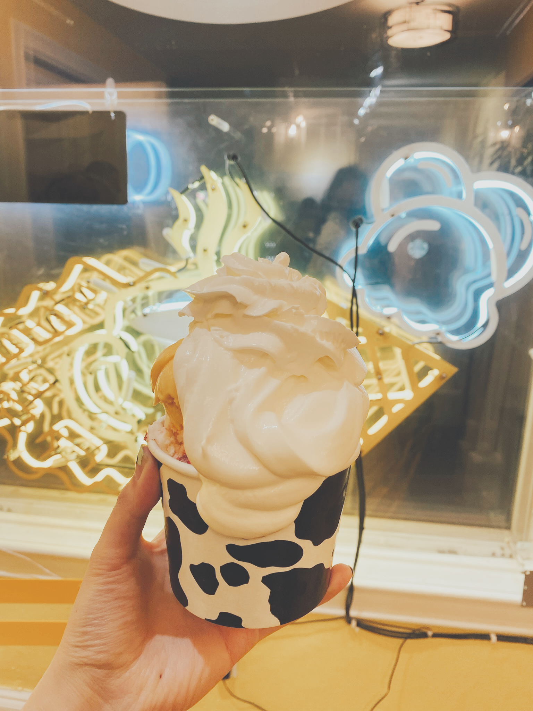
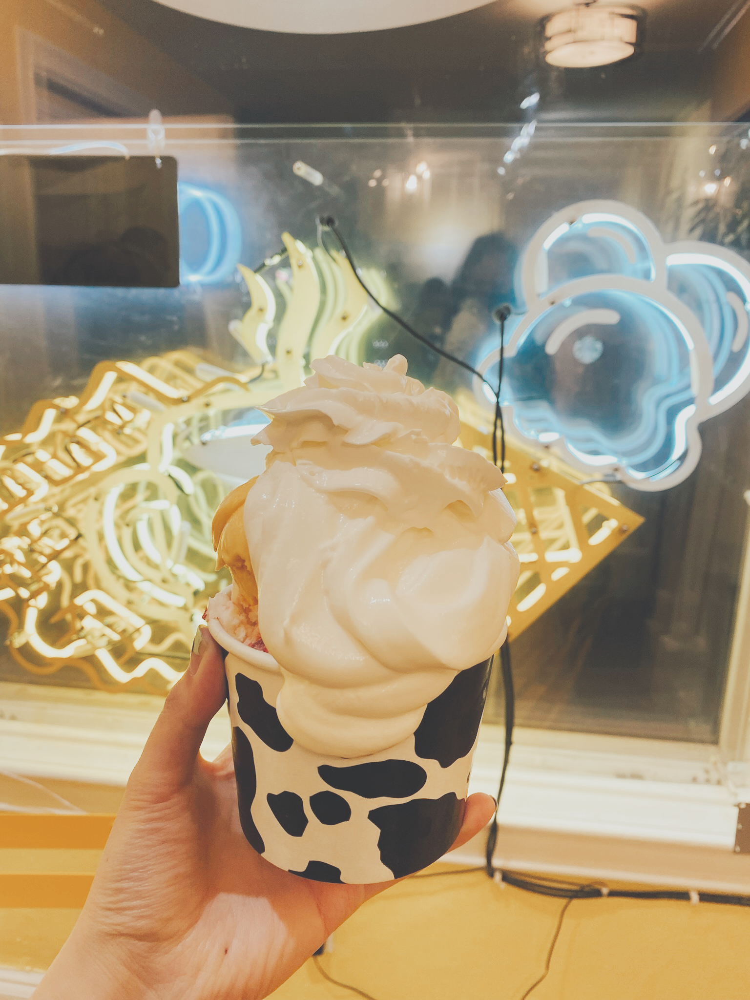

Below are my top picks for cafes to do work at, restaurants to eat at, and places to hit up when you're just craving something sweet. Not only are these places aesthetic and great for pictures, but the food or drinks offered are also delicious! Be sure to check out a more extensive list of places here if you're interested in seeing more.
From left to right: KLVN Coffee Lab, Gepetto Cafe, Centered Coffee and Wellness, and Pamela's Diner


From left to right: The Speckled Egg, Thai Me Up, The Porch, and Two Sisters


From left to right: Dave and Andy's Homemade Ice Cream, Mercurio's Gelato, NatuRoll Creamery, and Treat - Ice Cream and Liege Waffles


 
